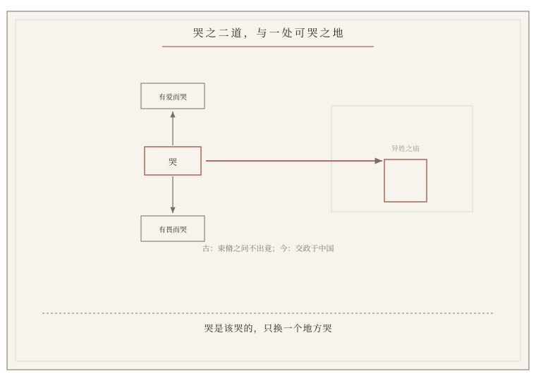

檀弓上 · 三·七十六 · 第 279 课
陳莊子死，赴於魯，魯人欲勿哭。繆公召縣子而問焉。縣子曰：「古之大夫，束脩之問不出竟，雖欲哭之，安得而哭之？今之大夫，交政於中國，雖欲勿哭，焉得而弗哭？且臣聞之，哭有二道：有愛而哭之，有畏而哭之。」公曰：「然，然則如之何而可？」縣子曰：「請哭諸異姓之廟。」於是與哭諸縣氏。
说什么事：齐国大夫陈庄子死了，讣告送到鲁国，鲁人不想哭他——因为君无哭邻国大夫之礼。缪公召县子来问。县子说：古时的大夫不与外国私交，想哭也没处哭；如今的大夫在天下交结政事，想不哭也办不到。而且臣听说哭有两条路：因爱而哭，因畏而哭。公问那怎么办才可。县子说：请到异姓之庙里去哭。于是缪公就到县氏家庙里去哭了。
落在哪一层：礼与势。论「礼之所无，势之所迫，如何自处」。
为何编在此位：上节论言之有地，此节论哭之有道。一言一哭，皆在「名不正而事已至」的处境里找一条路。
【经】陳莊子死，赴於魯，魯人欲勿哭。繆公召縣子而問焉。縣子曰：「古之大夫，束脩之問不出竟，雖欲哭之，安得而哭之？今之大夫，交政於中國，雖欲勿哭，焉得而弗哭？且臣聞之，哭有二道：有愛而哭之，有畏而哭之。」公曰：「然，然則如之何而可？」縣子曰：「請哭諸異姓之廟。」於是與哭諸縣氏。
【注】君無哭鄰國大夫之禮。陳莊子，齊大夫陳恆之孫，名伯。以其不外交。言時君弱臣強，政在大夫，專盟會以交接。以權微勸之。明不當哭。
【疏】此一节论哭邻国臣之法。案《世本》「成子当生襄子班，班生庄子伯」，郑依《世本》知也。
赴 讣告。报丧曰赴。
欲勿哭 想不哭。因于礼无据。
缪公 鲁缪公。
县子 鲁之知礼者，名琐（见 283 节疏「琐，县子名」）。
束脩之问 以束脩（十条干肉）为礼的相互问候。问，馈问、通问。
不出竟 不出国境。竟，境。
交政于中国 在诸国之间交结政事。中国，中原诸国。
哭有二道 哭有两条路。
畏而哭之 因畏惧而哭。
异姓之庙 非己姓的家庙。鲁为姬姓，县氏为异姓。
与哭诸县氏 就到县氏家庙里去哭。「与」，参与、一同。
陈庄子死了，讣告送到鲁国，鲁人不想哭他——因为国君没有哭邻国大夫之礼。缪公召县子来问。县子说：「古时的大夫，送礼通问不出国境，诸侯即使想哭他，又从哪里哭起？如今的大夫，在诸国之间交结政事，诸侯即使不想哭，又怎么能不哭？况且臣听说，哭有两条路：因爱而哭，因畏而哭。」缪公说：「是这样。那么怎么办才合适？」县子说：「请到异姓之庙里去哭。」于是缪公就到县氏家庙里去哭了。
此节是一段极冷静的政治对话，四句话，四个转折。
一、事起于礼无据：鲁人「欲勿哭」，理由正当——「君无哭邻国大夫之礼」。
二、县子不驳这个理由，先摆两代之势：古之大夫「束脩之问不出竟」，故无从哭；今之大夫「交政于中国」，故不能不哭。礼没变，势变了。哭与不哭，都不再由礼决定。
三、最狠一句是「哭有二道：有爱而哭之，有畏而哭之」。注说「以权微劝之」——用权变之法，轻轻一劝。他把「哭」这件最见情的事，剖成了两半，而在当时的情势下，谁都清楚是哪一半在起作用。
四、缪公听懂了，但仍要问「如之何而可」——他知道自己不能不哭，也知道不能以国君之身去哭。县子给的答案是「请哭诸异姓之庙」：哭，但不在自己的庙里哭。
这一招极妙：事情办了，礼也没破。国军没有以君的身份哭邻国大夫，而是以一个客人、一个异姓之亲的身份，在县氏的家庙里哭了。
第一层 「古」「今」二字的分量 县子不是在讲历史，是在讲一个事实：礼所依托的那套世局已经不在了。古大夫不外交，所以君臣之间只有国内的关系；今大夫交政于中国，一国的君就不得不看另一国的脸色。同一句「君无哭邻国大夫之礼」，在古时是自然，在今时是托词。
第二层 「哭有二道」的坦白 这句话在《檀弓》里最冷。礼书上写哭，从不问动机；县子偏把动机拆开：爱是一条，畏是一条。他不劝缪公去爱，也不劝他别畏，只把两条路摆出来，让君自己认。
认了之后怎么办？他没有给出「应当爱」的答案，给的是「哭诸异姓之庙」。这是把一件不能正做的事，做在一个能容它的地方。
第三层 「异姓之庙」的巧处 哭于异姓之庙，三重效果：一是哭之实具（人情上过得去，齐国不会再记这笔）；二是君未以君礼哭之（礼制上无损）；三是把这件事落到「私」的层面——是同姓异姓之间的通问，不是国与国的吊临。
礼在势面前，往往不是硬顶，而是换一个位置。换位置不等于放弃，放弃是不哭。
第四层 与 276 节相照 276 节曾子许客「反哭于尔次」，是给人一处可哭之地；此节县子请君「哭诸异姓之庙」，也是给君一处可哭之地。两处相隔数节，做法如出一手：礼的通达，常在「另设一处」上。
与今日何干 今人常遇「于礼无据，于势不能不做」的事。此节示范了一套做法：先认清礼的原据已失（古今之变），再坦白动机（爱抑畏），最后换一个位置去办（异姓之庙）。三步之后，事办了，名也没乱。
| 左 | 右 |
|---|---|
| 鲁人欲勿哭 | 君无哭邻国大夫之礼 |
| 古之大夫 | 束脩之问不出竟 |
| 今之大夫 | 交政于中国 |
| 虽欲哭之 | 安得而哭之 |
| 虽欲勿哭 | 焉得而弗哭 |
| 有爱而哭之 | 一道 |
| 有畏而哭之 | 一道 |
| 请哭诸异姓之庙 | 哭而不失其名 |
| 与哭诸县氏 | 事办了，礼未破 |
画两座家庙的门庭，视点平。左侧一座庙门紧闭，门上一块素牌（无字），门前站着一位深衣之人（正面、手按门框、欲入而止）；右侧稍远处一座庙门半开，门内供案上设两只素器，案前一盏小灯已点。两座庙之间隔着一条空巷。不写文字、不画人面细节。赭色只用在左侧那扇紧闭门上的门环，与右侧那盏灯的灯芯。
